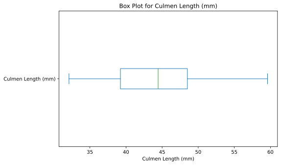
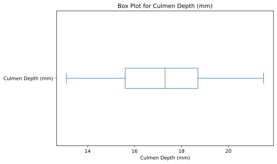
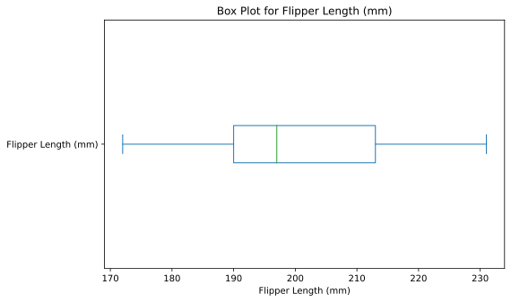
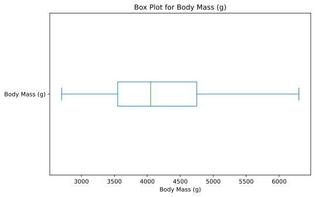
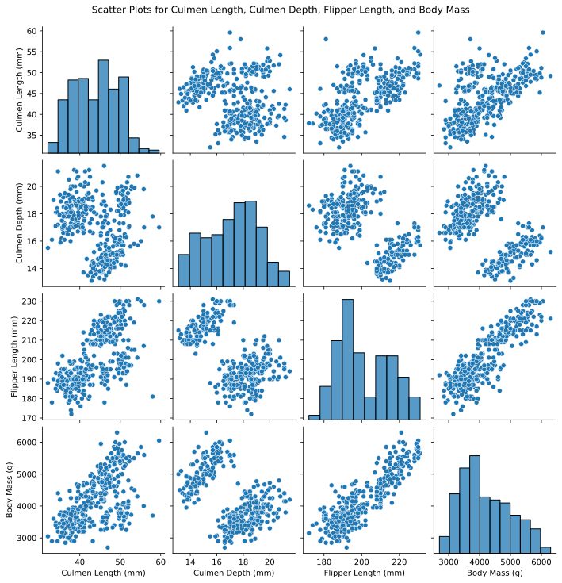

import pandas as pd
url = "https://raw.githubusercontent.com/pic16b-ucla/24W/main/datasets/palmer_penguins.csv"
penguins = pd.read_csv(url)Intro and Set Up
Hello! Welcome to my Data Visualization Tutorial. For the tutorial, I will be using the Palmer Penguins data set. The url for this data set can be found below.
The first step is to import pandas and load in the data set.
Using Head() and Info() Functions
Next, we can look at what the data looks like using the head and describe function in pandas.
penguins.head()| studyName | Sample Number | Species | Region | Island | Stage | Individual ID | Clutch Completion | Date Egg | Culmen Length (mm) | Culmen Depth (mm) | Flipper Length (mm) | Body Mass (g) | Sex | Delta 15 N (o/oo) | Delta 13 C (o/oo) | Comments | |
|---|---|---|---|---|---|---|---|---|---|---|---|---|---|---|---|---|---|
| 0 | PAL0708 | 1 | Adelie Penguin (Pygoscelis adeliae) | Anvers | Torgersen | Adult, 1 Egg Stage | N1A1 | Yes | 11/11/07 | 39.1 | 18.7 | 181.0 | 3750.0 | MALE | NaN | NaN | Not enough blood for isotopes. |
| 1 | PAL0708 | 2 | Adelie Penguin (Pygoscelis adeliae) | Anvers | Torgersen | Adult, 1 Egg Stage | N1A2 | Yes | 11/11/07 | 39.5 | 17.4 | 186.0 | 3800.0 | FEMALE | 8.94956 | -24.69454 | NaN |
| 2 | PAL0708 | 3 | Adelie Penguin (Pygoscelis adeliae) | Anvers | Torgersen | Adult, 1 Egg Stage | N2A1 | Yes | 11/16/07 | 40.3 | 18.0 | 195.0 | 3250.0 | FEMALE | 8.36821 | -25.33302 | NaN |
| 3 | PAL0708 | 4 | Adelie Penguin (Pygoscelis adeliae) | Anvers | Torgersen | Adult, 1 Egg Stage | N2A2 | Yes | 11/16/07 | NaN | NaN | NaN | NaN | NaN | NaN | NaN | Adult not sampled. |
| 4 | PAL0708 | 5 | Adelie Penguin (Pygoscelis adeliae) | Anvers | Torgersen | Adult, 1 Egg Stage | N3A1 | Yes | 11/16/07 | 36.7 | 19.3 | 193.0 | 3450.0 | FEMALE | 8.76651 | -25.32426 | NaN |
penguins.info()<class 'pandas.core.frame.DataFrame'>
RangeIndex: 344 entries, 0 to 343
Data columns (total 17 columns):
# Column Non-Null Count Dtype
--- ------ -------------- -----
0 studyName 344 non-null object
1 Sample Number 344 non-null int64
2 Species 344 non-null object
3 Region 344 non-null object
4 Island 344 non-null object
5 Stage 344 non-null object
6 Individual ID 344 non-null object
7 Clutch Completion 344 non-null object
8 Date Egg 344 non-null object
9 Culmen Length (mm) 342 non-null float64
10 Culmen Depth (mm) 342 non-null float64
11 Flipper Length (mm) 342 non-null float64
12 Body Mass (g) 342 non-null float64
13 Sex 334 non-null object
14 Delta 15 N (o/oo) 330 non-null float64
15 Delta 13 C (o/oo) 331 non-null float64
16 Comments 26 non-null object
dtypes: float64(6), int64(1), object(10)
memory usage: 45.8+ KBAs we can see from the displayed info, there are 344 entries in the dataframe as well as 17 different columns that are associated with each entry. So each data point has a studyName, Sample Number, ect. We can see that some columns, such as Comments or Body Mass, have a non-Null count of under 344. This means that some data entries in the dataframe do not have any values for some of these columns.
For this tuturial, lets look at the following four columns :‘culmen length’, ‘culmen depth’, ‘flipper length’, ‘body mass’ and see how they compare based on the study. Since some of these are null, lets remove the rows that have a null value for at least one of these columns.
columns_of_interest = ['Culmen Length (mm)', 'Culmen Depth (mm)', 'Flipper Length (mm)', 'Body Mass (g)']
df_cleaned = penguins.dropna(subset=columns_of_interest)df_cleaned.info()<class 'pandas.core.frame.DataFrame'>
Index: 342 entries, 0 to 343
Data columns (total 17 columns):
# Column Non-Null Count Dtype
--- ------ -------------- -----
0 studyName 342 non-null object
1 Sample Number 342 non-null int64
2 Species 342 non-null object
3 Region 342 non-null object
4 Island 342 non-null object
5 Stage 342 non-null object
6 Individual ID 342 non-null object
7 Clutch Completion 342 non-null object
8 Date Egg 342 non-null object
9 Culmen Length (mm) 342 non-null float64
10 Culmen Depth (mm) 342 non-null float64
11 Flipper Length (mm) 342 non-null float64
12 Body Mass (g) 342 non-null float64
13 Sex 334 non-null object
14 Delta 15 N (o/oo) 330 non-null float64
15 Delta 13 C (o/oo) 331 non-null float64
16 Comments 25 non-null object
dtypes: float64(6), int64(1), object(10)
memory usage: 48.1+ KBWe can see that two rows got dropped from the dataframe, as the total number of entries is now 342.
Visualization using Box Plot
Next, we can use matplotlib to visualize some of the data, using these four columns that we are intersted in.
#import matplotlib
import matplotlib.pyplot as pltNow we can write a basic for loop that displays the box plot for each of these four columns.
for column in columns_of_interest:
plt.figure(figsize=(8, 5))
df_cleaned[column].plot(kind='box', vert=False)
plt.title(f'Box Plot for {column}')
plt.xlabel(column)
plt.show()



Visualization with Seaborn and Scatterplots
We can also use a software seaborn, a data visualization tool, help with our data.
import seaborn as snsWe can use seaborn to display scatter plots that compare each of the columns againist each other in order to find certain trends.
sns.pairplot(df_cleaned[columns_of_interest])
plt.suptitle('Scatter Plots for Culmen Length, Culmen Depth, Flipper Length, and Body Mass', y=1.02)
plt.show()
As we can see there are a total of 16 plots shown, and when we have a case of the column vs itself, a bar graph is displayed which shows the amount of category. From these charts we can make some insights. For example we can see that there is a relationship between flipper length and body mass. From the scatter plot, we can see that as flipper length increases, so does the body mass.
Conclusion
Thank you for reading this post!